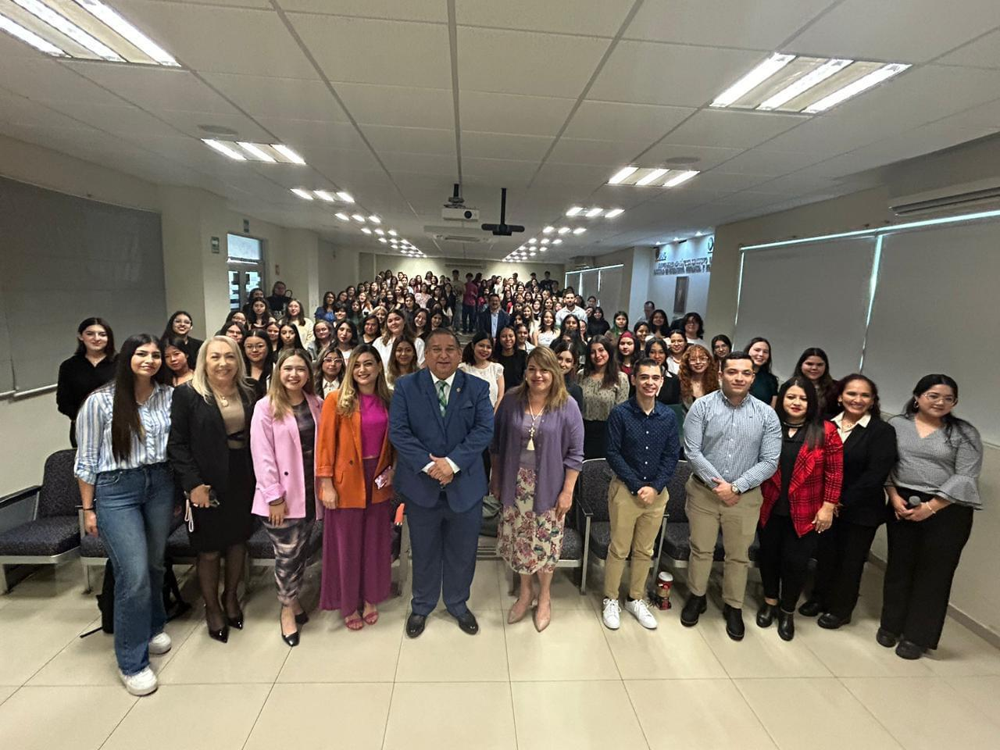

SEMANA DE LA MUJER ALCANZA UN
ÉXITO ROTUNDO
Gerardo Rodriguez

La semana pasada, la Facultad de Ingeniería Mecánica y Eléctrica fue el escenario de una serie de eventos en honor a la Semana de la Mujer, organizados por SAFIME. Desde conferencias inspiradoras hasta talleres prácticos, los estudiantes se sumergieron en una serie de actividades diseñadas para celebrar y promover el papel de la mujer en diversos ámbitos, desde la tecnología hasta la mecánica automotriz.
El inicio de la semana estuvo marcado por la fascinante conferencia "El mundo necesita CyberSecurity Girls", impartida por la Licenciada Isabel Cavazos, Key Account Manager de Quanti. Cavazos destacó la importancia de la presencia femenina en el campo de la ciberseguridad, inspirando a los asistentes a explorar este emocionante campo.
La diversidad de voces y experiencias se hizo evidente en los "Short Talks", donde figuras destacadas compartieron sus perspectivas dentro del programa Ingeniosas. Estas charlas no solo iluminaron el camino hacia la igualdad de género en STEM, sino que también celebraron los logros de las mujeres en estos campos.
Uno de los momentos más emocionantes fue la inauguración del Museo de la Mujer en el pasillo principal de la Facultad. Este espacio conmemorativo rinde homenaje a mujeres destacadas de todo el mundo a lo largo de la historia, recordando sus contribuciones y legados perdurables.
Además de la celebración y la reflexión, la semana también ofreció oportunidades para el crecimiento personal y la seguridad. El taller de autodefensa, dirigido por la Licenciada Fabiola Berber, brindó a las participantes las habilidades necesarias para protegerse y defenderse en cualquier situación. Por otro lado, el taller de ciberseguridad, dirigido por la M.A. Stephanie Harden Cooper Rodríguez, equipó a las asistentes con conocimientos fundamentales para navegar de manera segura en el mundo digital en constante evolución.
En resumen, la Semana de la Mujer en la Facultad de Ingeniería Mecánica y Eléctrica no solo fue una celebración de los logros pasados y presentes de las mujeres, sino también un recordatorio del poder del compromiso, la educación y la solidaridad en la búsqueda de la igualdad de género. Estos eventos no solo inspiraron a los participantes, sino que también allanaron el camino para un futuro más inclusivo y equitativo para todos.
EVENTOS DESTACADOS
TALLER DE SOLDADURA
Lunes 4 - 3:00 PM - Salón 2300
SIMPOSIO VIOLENCIA CONTRA MUJER
Marzo 4 y 5 - 8:30 AM - Biblioteca Raúl Ángel Frías
CURSO BASICO SOLIDWORKS
Martes 5 - 2:00 PM - Salón 2300
TALLER ELECTRONICA
Martes 5 - 12:00 PM - Salón 2300
TALLER FRONT-END
Miércoles 6 - 2:00 PM - Salón 2300
TALLER TRANSCRIPCION IA
Miércoles 6 - 3:30 PM - Jorge Urencio